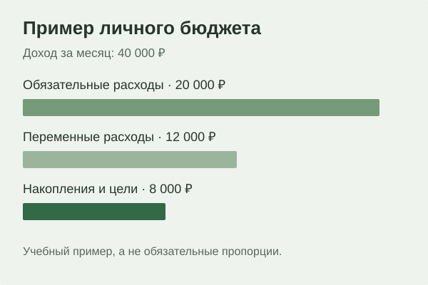

Финансовая грамотность без сложных слов
Финансовая база
Инвестиции начинаются не с брокерского приложения. Сначала нужно понять, сколько денег приходит, сколько уходит и какая часть действительно свободна.
Доходы и расходы
Первый шаг — увидеть свои деньги целиком. Даже высокий доход не гарантирует финансовой устойчивости, если человек не понимает структуру своих расходов.
- обязательные расходы;
- переменные расходы;
- накопления;
- деньги на финансовые цели.
Финансовая подушка
Финансовая подушка — это резерв на непредвиденные ситуации. Она нужна не для высокой доходности, а для того, чтобы срочные расходы не заставляли брать дорогой кредит или продавать инвестиции в неподходящий момент.
Цель важнее инструмента
- определить цель;
- определить необходимую сумму;
- понять срок;
- оценить допустимый риск;
- только после этого выбирать финансовый инструмент.
-
Краткосрочные цели
- поездка;
- техника;
- резерв.
-
Долгосрочные цели
- образование;
- жильё;
- капитал на будущее.
